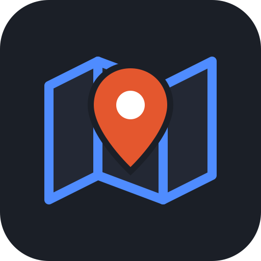

GenGISPrivacy Policy
Effective 25 October 2026 · applies to the GenGIS web app (g2.luiscintron.com), the desktop app and the Android app
In short
- GenGIS has no server and no accounts of its own. Nobody at GenGIS can see your maps.
- Your projects are saved on your device. If you turn on cloud sync, they are also saved in your own OneDrive or Google Drive, in a folder GenGIS can use and nothing else.
- No analytics, no advertising, no tracking, no selling or sharing of data.
What stays on your device
Projects (shapes, markers, pictures, layers, notes), earlier copies of them, settings, map tiles you downloaded for offline use, and any API keys you enter for map or search services are stored in your browser's or app's own storage on your device. They do not leave it unless you export a file, share one, or turn on cloud sync.
Cloud sync (optional)
When you connect an account, GenGIS talks directly from your device to Microsoft or Google. There is no GenGIS server in between.
Microsoft OneDrive
Permission requested: Files.ReadWrite.AppFolder, plus your basic profile (openid, profile, email) and offline_access to stay signed in. GenGIS can only read and write its own folder, OneDrive → Apps → GenGIS. It cannot see any other file in your OneDrive.
Google Drive
Permission requested: drive.file, plus your basic profile (openid, profile, email). GenGIS can only see and change files it created itself: one folder named GenGIS in My Drive and the project files in it. It cannot see any other file in your Google Drive.
What GenGIS does with that access
- It reads your name and email address to show which account is connected.
- It uploads each named project you choose to sync as a
.gengis.jsonfile, reads those files back to keep your devices in step, renames a file when you rename its project, and lists that one folder to show projects from your other devices. - It never deletes your files (the one exception: an empty duplicate GenGIS folder it has just made itself, when two devices made one at the same moment). Disconnecting leaves them where they are.
Sign-in tokens
The tokens that keep you signed in are stored on your device only: in the web app's own storage for this site, or, in the desktop app, encrypted by your operating system (Windows DPAPI, macOS Keychain, or the Linux secret service). They are never sent anywhere except to Microsoft or Google to keep you signed in.
Google API Services: Limited Use
GenGIS's use and transfer of information received from Google APIs adheres to the Google API Services User Data Policy, including the Limited Use requirements. Google user data is used only to provide the sync feature described above, on your device. It is not transferred to anyone, not used for advertising, not used to train AI or machine-learning models, and not read by people.
Stopping cloud sync
Choose Project → Cloud sync → Disconnect. GenGIS forgets the sign-in on that device. You can also remove GenGIS's access at any time in your account settings: Microsoft (personal), Microsoft (work or school), or Google. Your files stay in your cloud storage until you delete them there.
Services your device contacts
Like any map app, GenGIS loads data from third-party services. Each of these receives your device's IP address and the request itself (for example, the map area being shown, or the place you search for), under that service's own privacy policy:
- Map tiles from the map you choose (for example OpenStreetMap, CARTO, Esri, OpenTopoMap, Stadia Maps, Thunderforest, MapTiler, Mapbox).
- Place search through the search service you choose (for example OpenStreetMap Nominatim, LocationIQ, Geoapify, Maps.co).
- Live aircraft and vessel traffic, only when you turn it on (for example adsb.lol, adsb.fi, aisstream.io, or a receiver you set up).
- Update check: GitHub, to see whether a newer version exists.
- Cloud sync: Microsoft and Google, as described above. In the web app, opening the Cloud sync window loads Google's sign-in script from accounts.google.com, so that its button can open Google's sign-in window.
GenGIS sends these services only what each request needs. API keys you enter go only to the service they belong to.
Children
GenGIS is not directed at children under 13 and does not knowingly collect any personal information.
Changes and contact
If this policy changes, the new version will be posted here with a new effective date. Questions: open an issue at github.com/lcintron/gengis.